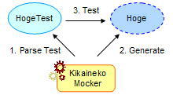

KikainekoMocker
Java
Mock
Generates Classes from Test Codes
KikainekoMocker is a tool that generates pseudo-classses from test cases. (*1)
Pseudo-classes are "classes that behave in the same way as the real classes, but have the incorrect implementation" (known as mocks, stubs, or drivers).
KikainekoMocker is a tool that implements the concept of SCT, a method to generate pseudo-classes from test cases.
KikainekoMocker reads JUnit test cases, and generates pseudo-classes which pass the test case.
(*1) This concept is called SCT. Refer to "Pseudo-Classes and SCT" for futher information.
Generates Pseudo-Classes which Pass the Test
KikainekoMocker reads JUnit test cases, and generates pseudo-classes which pass the test case.
For example, let's say that there is a test code for Class Hoge named Class HogeTest.
If you let KikainekoMocker read HogeTest, the tool will parse HogeTest and automatically implement Class Hoge. The generated Hoge class is implemented so it will pass the HogeTest Class.
But keep in mind that the Hoge class does not have the correct implementation.

So when are these pseudo-classes useful?
For one, there is the "Mock Pattern" which is introduced later on. By using the mock pattern, implementation and testing can be performed more simply.
Also, it can be use for verifying design, or searching for better interfaces.
When do you use it?
By using KikainekoMocker, though it is a pseudo code, you can obtain a moving class, just by writing a test code.
By using this characteristic, KikainekoMocker can be used in many ways.
A representative example is to use for mock patterns. Here, we introduce when to use pseudo-classes.
Developing Software with Multiple Developers
When developing the same software among multiple developers, a problem arises which concern class dependencies.
For example, you were to implement Class A. If this Class A has a dependency relation with Class B, and this Class B is still under development by another member, you cannot start implementation or testing of Class A until Class B is completed.
There are cases in such problems occur.
Therefore, the development schedule must be adjusted to meet the dependencies of classes, or recently there are many technologies to resolve this problem of dependencies (such as DI). Pseudo-Classes is another way to resolve this problem. By preparing a pseudo-class for Class B, you can start implementation or testing for Class A.
These are the merits of pseudo-classes. And in these cases KikainekoMocker works effectively.
KikainekoMocker can be used to generate a pseudo-class for Class B. Furthuremore, to use KikainekoMocker you just have to write a test.
In this case, you write a test code for Class B. By using KikainekoMocker, a pseudo-class for Class B is generated.
Also, the following merits can be given.
- If it is only the test code, it may be easier to have the developer of Class B to inplement it
- Since test codes are concrete, misperception can be minimized between developers
- When Class B is implemented, the test code can be reused
Often, though implementation of Class B may be difficult, to implement the test code may not be as difficult. For that reason, you may be able to have the developer of Class B to implement it, and use that to generate the pseudo-class.
Also, since the test is an actual code, misperception can be minimized.
In addition, when the real Class B is completed, the test code for generating the pseudo-class can be reused for the actual test code.
Dependancy with the Environment
Implementation and testing of classes which depend on the environment such as databases, tend to have difficulty or high cost.
That is, it is difficult to prepare the environment, and it takes time and cost just to perform a simple test.
In these case, pseudo-classes can be use to resolve the dependency with the environment. First you identify the section which depends on the environment, and replace it with the pseudo-class.
By using KikainekoMocker, you don't have to write complicated queries, or be aware of the environment. You just have to write the test code.
And Beyond!?
As mentioned above, KikainekoMocker works effectively to resolve dependency problems.
But, KikainekoMocker can be used for not just generating pseudo-classes. The fact that it generates pseudo-classes with test codes can be used.
For example, actually execute classes which you just designed...
There are many possibilities.
Please think of the possibilites. And please let us know!
How Do You Write the Tests?
For detailed information on how to use KikainekoMocker, refer to "How do you use KikainekoMocker?".
Here, for you to understand the general knowledge, we explain how to write the test code for a certain pseudo-class.
A Pseudo-Class for Simple Calculation
For example to generate a pseudo-class where you "set" the operator and have the class calculate, you may write a test code shown below.
package sample;
import junit.framework.TestCase;
public class CalcTest extends TestCase {
Calc calc;
public void testAdd(){
calc=new Calc();
calc.set("+");
assertEquals(5,calc.get(2,3));
}
With this code, you can generate a pseudo-class where 5 is returned when 2 and 3 is given to the method "get", after setting "+" for the operator.
A Pseudo-Class which use Objects
KikainekoMocker can handle Objects without any problems. Therefore you can generate pseudo-classes which use Objects.
For example, by changing the data type from int to Integer, KikainekoMocker generates the pseudo-class.
public void testAddInteger(){
calc=new Calc();
calc.set("+");
Integer i2=new Integer(2);
Integer i3=new Integer(3);
assertEquals(new Integer(5),calc.get(i2,i3));
}
As you can see, the test code for KikainekoMocker is not any different from ordinary test cases.
A Pseudo-Class with Methods that Return Various Values
With earlier examples, one method only returnd one value.
Let's make a pseudo-class with a method that returns various values.
public void testIncrement(){
calc=new Calc();
calc.setIncrement(1,0);
assertEquals(0,calc.next());
assertEquals(1,calc.next());
assertEquals(2,calc.next());
}
There is no meaning to each process, but this is an example of a test code which counts up numbers.
KiainekoMocker generates these kinds of pseudo-classes without any problems.
This is also a normal test case.
You can also override setUp() and tearDown() methods.
KikainekoMocker can generate pseudo-classes from normal test codes, shown as above.
Contents
- Home
- What can KikainekoMocker do?
- How do you use KikainekoMocker?
- How does KikainekoMocker work?
- Download